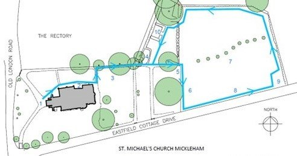
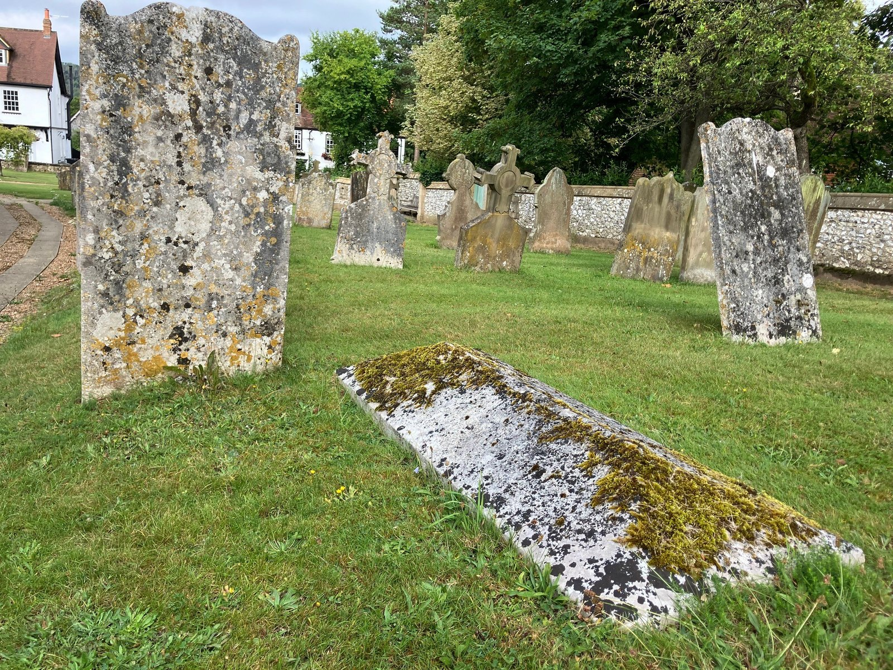
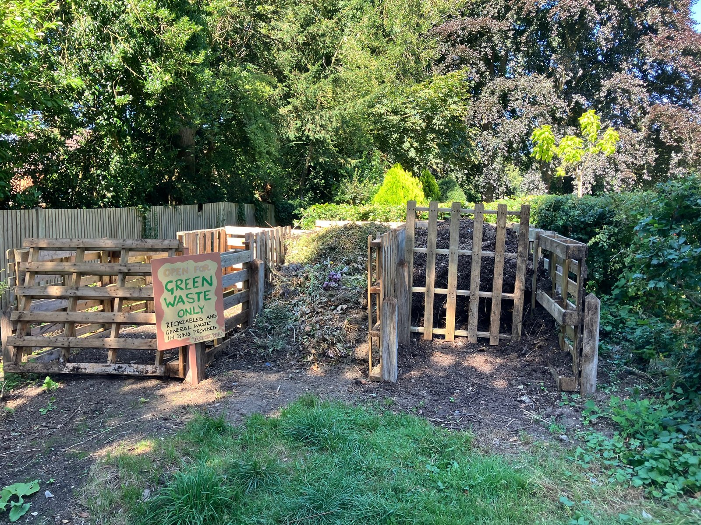
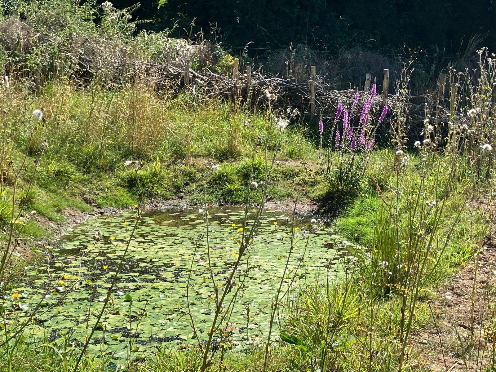
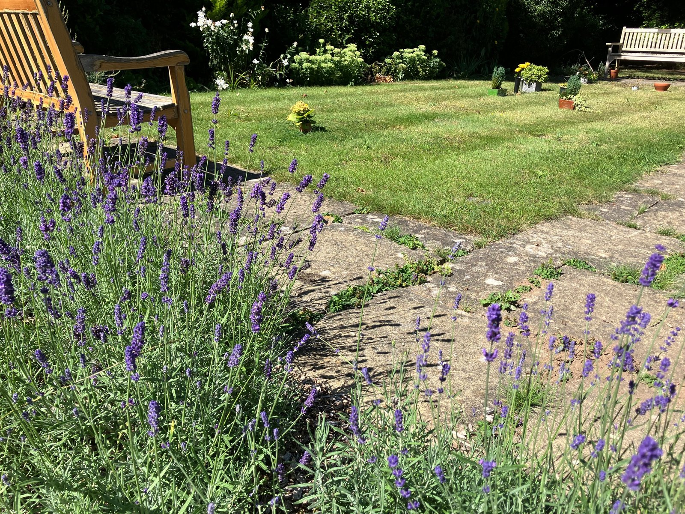
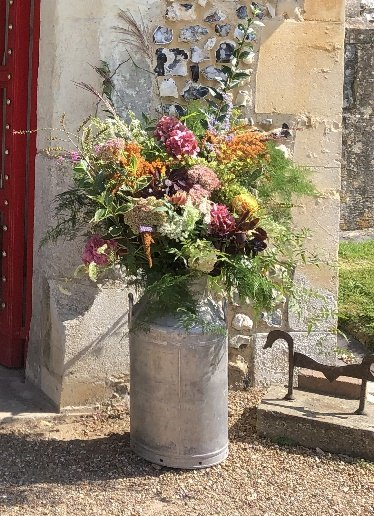

About our parish
Eco Church
Care for creation is part of the parish’s life and care for its churchyard. The Eco Group has encouraged practical steps for wildlife, the grounds and church life.
About our parish
Care for creation is part of the parish’s life and care for its churchyard. The Eco Group has encouraged practical steps for wildlife, the grounds and church life.

“Reducing the causes of climate change is essential to the life of faith. It is a way to love our neighbour and to steward the gift of creation.”
The Eco Group was established in 2022 to advise the PCC on local environmental action. The parish registered with the A Rocha Eco Church Award Scheme and received the Eco Church Silver Award. The supplied Churchyard Trail and award badge record this as a 2024 achievement; this page records the award received and does not claim that accreditation is currently active.
Practical care for creation
The parish’s source material records the following work by the Eco Group and volunteers.
More than 80 metres of hedgerow were planted. The 2024 trail describes newly planted hedges around the newer churchyard as future green corridors for mammals and birds.
The compost area was reorganised so green waste could be composted and the resulting soil returned to areas within the churchyards.
The Churchyard Trail records that an orchard was planted in winter 2022/23, with apple, pear, damson, quince and medlar trees.
Lavender and rosemary were planted around the Garden of Remembrance to provide summer nectar for insects.
The trail describes the area behind the church being mown twice a year, and a three-year mowing and raking rotation in the newer churchyard, leaving areas unmown each year.
A rainwater-fed seasonal pond was created in 2024. The trail describes dragonflies, damselflies, pond insects and birds using the area.
Information boards were installed to explain the changes taking place and why they matter.
The Eco Church page and trail describe work to phase out chemical herbicides and pesticides harmful to wildlife, and reduce new or single-use plastics. The trail says churchyard herbicide use had been phased out in favour of a weed burner for paving.
The parish stopped using floral foam and trained flower arrangers to support stems with crumpled chicken wire instead.
A living churchyard
These examples and counts are drawn from the supplied Churchyard Trail (2024) and the earlier Eco Church page. They are records from those sources, not a new survey.
Serotine, Common Pipistrelle, Soprano Pipistrelle and Brown Long-Eared bats are recorded in the Churchyard Trail.
The 2024 Churchyard Trail says 251 lichen species had been found in the churchyard.
The trail records slow worms in the churchyard and explains the rotational mowing approach that leaves areas undisturbed.
The trail describes dragonflies, damselflies and pond insects at the seasonal pond, as well as birds using it.
The earlier Eco Church page listed 120 flowering plants and 15 butterfly species in its first-year records; it said records for bees, birds, mammals and reptiles were still to be collated.

Explore the churchyard
Follow the churchyard trail to see the route, environmental work and wildlife described in the 2024 guide.
View / Download Churchyard Trail (DOCX)



Flowers for worship and special occasions
For regular and occasional services, the parish encourages seasonal, locally sourced flowers and foliage, and the elimination of floral foam. Flowers are part of many important events; the guidance asks suppliers and arrangers to consider the environmental impact of their materials and the provenance of flowers.


Caring for our church buildings
The earlier Eco Church page records that the church had received an Energy Audit assessing its energy footprint. It identified formulating a phased plan to implement the findings as the next step; the supplied sources do not confirm what happened afterwards.
A shared part of parish life
If you are interested in wildlife, gardening, churchyard conservation or sustainability, contact the churchwardens to ask about Eco Church activities. The 2024 Churchyard Trail lists this parish email for further information.
Email the churchwardens